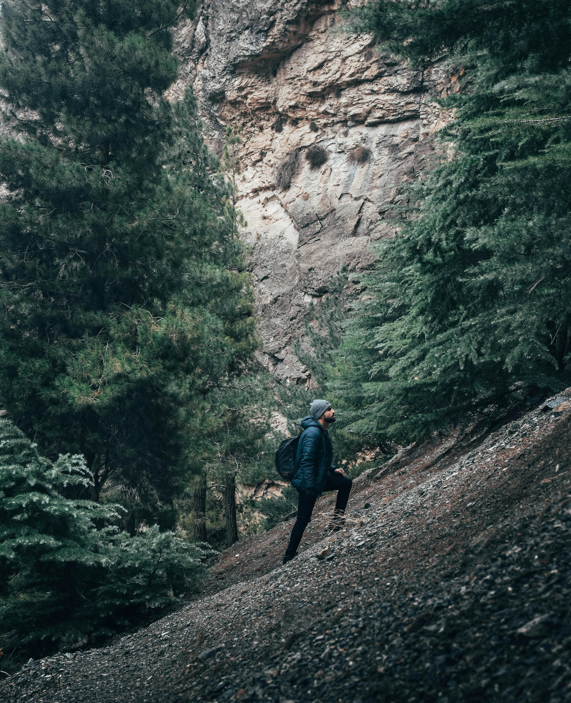

Kakum Canopy Walkway
Experience the thrill of heights
Embark on an unforgettable adventure across the treetops of Kakum National Park. The canopy walkway offers breathtaking views and a unique perspective of the forest.
Adventure Activities
Canopy Walk
Feel the adrenaline as you walk across suspended bridges high above the forest floor. Enjoy panoramic views and spot wildlife from a bird's eye view.
Trail Exploration
Discover scenic trails through dense vegetation, encounter diverse flora and fauna, and immerse yourself in the natural beauty of the park.
Price & Booking
Check our website for current prices, opening hours, and booking options. Plan your visit to Kakum Canopy Walkway today for an unforgettable experience in Ghana's wilderness.

Accommodations
Treehouse lodges, Camping sites, Restaurant, Guided tours, Souvenir shop